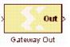

|
|
Xilinx Gateway Out blocks are the outputs from the Xilinx portion of your Simulink design. This block converts the System Generator fixed-point data type into Simulink Double.According to its configuration, the Gateway Out block can either define an output port for the top level of the HDL design generated by System Generator, or be used simply as a test point that will be trimmed from the hardware representationAs listed below, the Xilinx Gateway Out block is used to provide a number of functions: